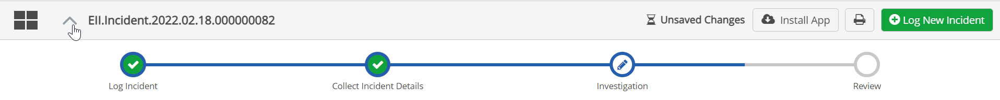
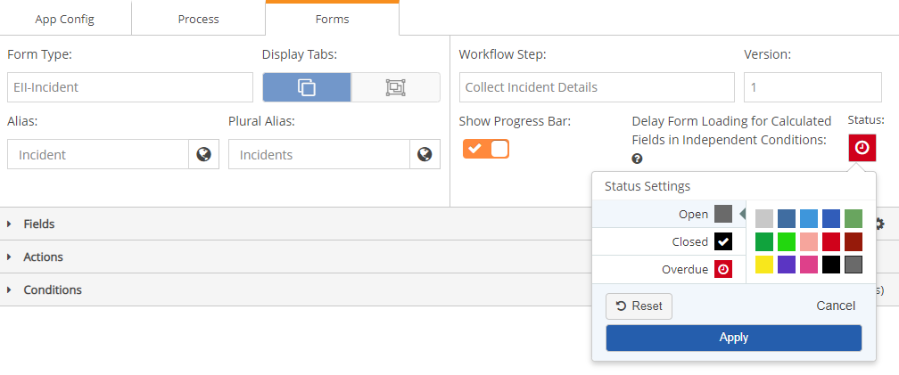

The Status indicator settings allow you to configure distinctive colors for each tab displayed in the app to indicate the status of the underlying workflow. Users can then better differentiate the various components of their process and quickly understand what child forms and processes are open, completed, and overdue.
The tab stripe color along with the symbol shown on the tab indicate the status. You can choose the default color for the tab stripe, then separate colors for each status, if desired.

By default, if no status settings are configured, tabs are shown with a simple gray bar at the top.
To configure the color-coded status indicators:
In Form Designer, for the Form Type, select the workflow type to configure.
This may be either the primary workflow or a child workflow. This does not apply to a grandchild workflow, since it does not appear in a separate tab but in a section on the parent workflow tab.
Click the Status icon to open the Status Settings palette.
For each status (Open, Closed, Overdue), first select the status, then select a color.

Configure the status settings for each child workflow similarly. They may be the same or different colors than the parent workflow. Assigning different colors to a child workflow will help distinguish the different process forms.